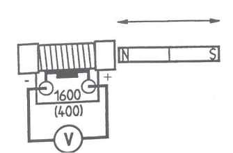

GENERAR UNA TENSIÓN INDUCIDA
Tópicos relacionados
Inducción de tensión en una bobina mediante la variación del flujo magnético producido por un imán de barra.
Objetivo
Establecer el efecto que produce un imán cuando es movido en las proximidades de un solenoide o bobina.
Materiales a usar
| Materiales | Cantidad |
|---|---|
| Bobina de 1600 espiras | 1 |
| Bobina de 400 espiras | 1 |
| Cables de conexión | 2 |
| Imán de barra | 1 |
| Multímetro Digital | 1 |
Montaje y procedimiento
- Conecta el multímetro, como voltímetro en la escala de los mV DC, a la bobina de 1600 espiras (tener en cuenta cable rojo al cable rojo de la bobina y cable azul al cable verde de la bobina).
- Introduce el imán por el polo norte (rojo), en la bobina, observando lo que marca el voltímetro y el signo de la medida.
- Deja el imán quieto en la bobina, registra los datos.
- Saca el imán de la bobina, registra los datos.
- Invierte los cables en el voltímetro, e identifica que pasa si vuelves a sacar el imán.
- Regresa los cables a su configuración original, y ahora introduce el imán por el polo sur (invierte el imán).
- Repite el paso anterior pero con los cables invertidos en el voltímetro.
- Retorna los cables a su posición original, luego introduce el imán por el polo norte, primero lento y después más rápido, reporta el valor máximo de voltaje identificado.
- Pon el voltímetro en el alcance más bajo pero en AC ( ) introduce y saca el imán de la bobina, apunta tus observaciones, además de los valores medidos.
- Repite el paso II con la bobina de 400 espiras.
Tabla 1. Medidas de voltaje inducido para cada uno de los pasos
| Paso | Voltaje inducido (mV) |
|---|---|
| II | |
| III | |
| IV | |
| V | |
| VI | |
| VII | |
| VIII | |
| IX | |
| X |
Evaluación
- ¿Qué se necesita para general una tensión eléctrica?
- ¿Hay diferencias en el signo de la tensión inducida cuando el imán se introduce por el polo norte y cuando se introduce por el polo sur?
- ¿Qué influencia tiene el sentido del movimiento del imán sobre el signo de la tensión medida por el voltímetro?
- Compara el voltaje inducido con la bobina de 1600 espiras, respecto a la bobina de 400 vueltas.
- ¿Qué nos dice el hecho observado, que el multímetro mida valores positivos y negativos en la bobina?
- ¿Qué puedes concluir del paso VIII?
- ¿Por qué en el paso IX no se registraron valores negativos en el voltímetro?
Bibliografía
- Serway, R. Física Volumen 2. Ed. McGraw Hill
- Tipler, P. Física Volumen 2. Ed. Reverté
- Hewitt, P. Física Conceptual. Ed. Addison Wesley
- Alonso, M. Finn, E. Física Volumen. Ed. Pearson
- Halliday, D. Resnick R. Krane, K. Física Tomo 2. Ed. CECSA
- Tippens, P. Física Fundamental. Ed. McGraw Hill